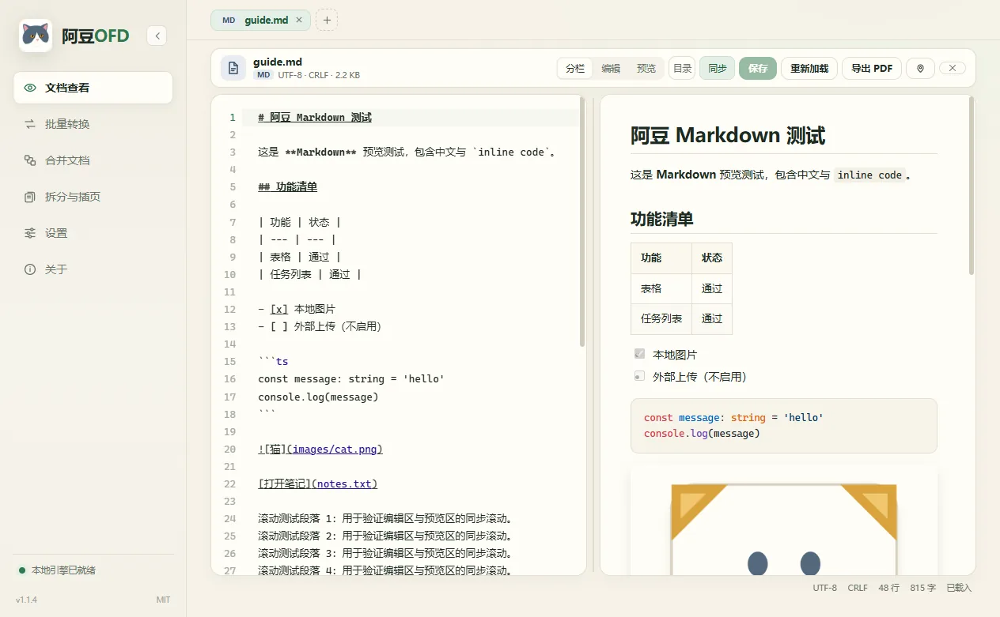
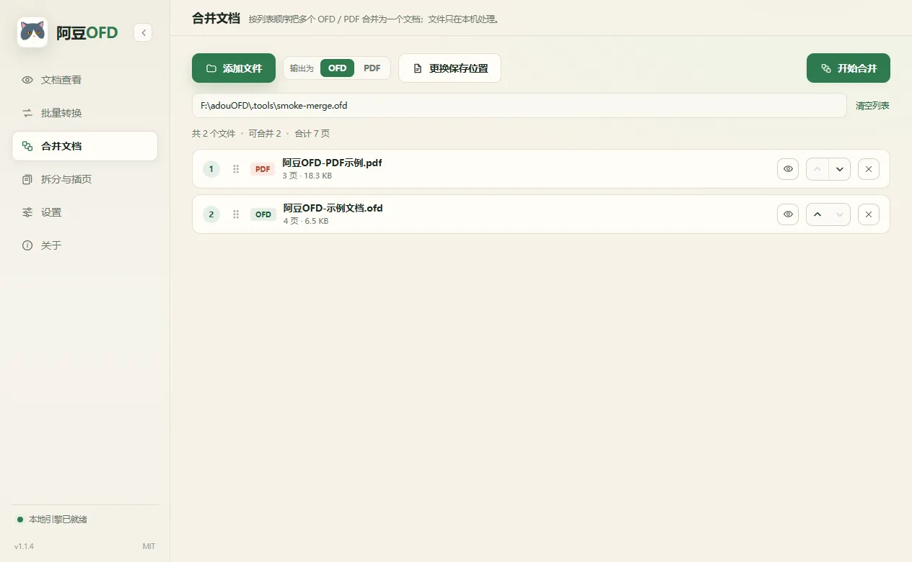
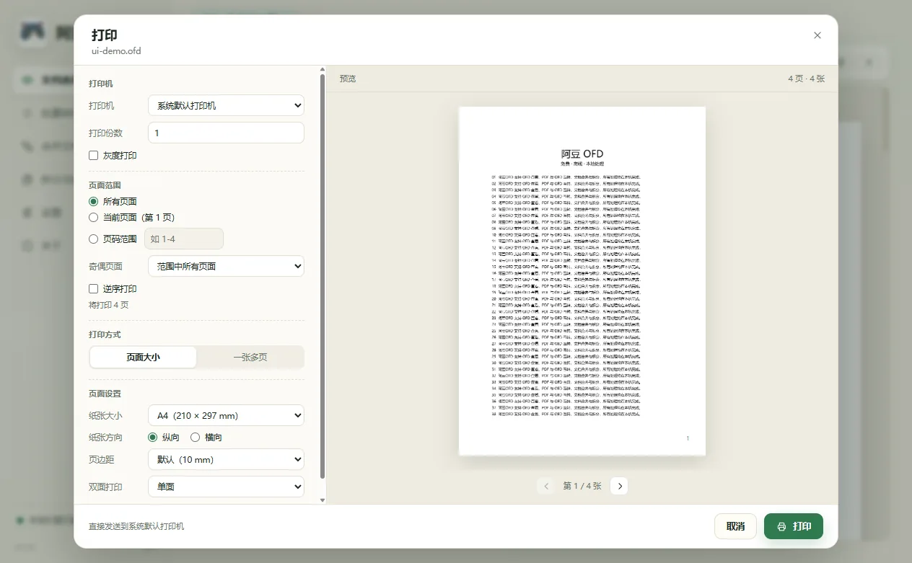

OFD / PDF 阅读
文字选择、缩略图、目录、页码跳转与全文搜索；支持跟随系统的浅色 / 深色主题。
Windows 10 / 11 · 免费开源
免费、离线的 OFD / PDF / Markdown 阅读与处理工具。
阅读、转换、合并、拆分插页、打印、全文搜索，都在本机完成；不上传文档，不需要登录。
功能
面向 OFD 发票、合同与日常 PDF / Markdown 文档。所有处理都在本机进行，不需要上传或登录。
文字选择、缩略图、目录、页码跳转与全文搜索；支持跟随系统的浅色 / 深色主题。
OFD 与 PDF 双向转换，Markdown / 文本导出 PDF；可选择矢量或图像模式。
按列表顺序合并多个 OFD / PDF，保留签章、样式与页面顺序，结果可直接打印。
按页或区间拆分文档，也可以把另一个文档的页面插入到指定位置。
份数、页码范围、纸张、方向、边距、N-up、装订与双面打印，带实时预览。
分栏编辑与预览、目录跳转、UTF-8 / GB18030 识别，一键导出 A4 PDF。
界面
阅读器、批量转换、合并、拆分插页、打印与设置。截图来自 Windows 桌面版。



下载
Windows 10 / 11 x64 · 约 166 MB · 内含精简 JRE 25，无需另装 Java。
安装包未做代码签名，Windows SmartScreen 可能提示“未知发布者”。请在发布页核对 SHA256 后再运行。
最近更新
常见问题
免费使用，源码以 MIT 许可开源。没有账号、订阅或使用次数限制。
不会。阅读、转换、合并、拆分、打印和搜索都在本机完成；只有你主动点击“检查更新”时才会请求版本清单，请求不包含文档内容、文件路径或账号信息。
Windows 10 / 11 x64。安装包内含精简 JRE 25，不需要另外安装 Java。
安装包未做代码签名。请从 CNB 或 GitHub 发布页下载，并核对发布页提供的 SHA256；应用内下载也会自动校验。
打开“设置 → 版本与更新”或“关于 → 版本更新”，点击检查更新；下载完成并通过 SHA256 校验后，点击“运行安装包”即可覆盖升级。